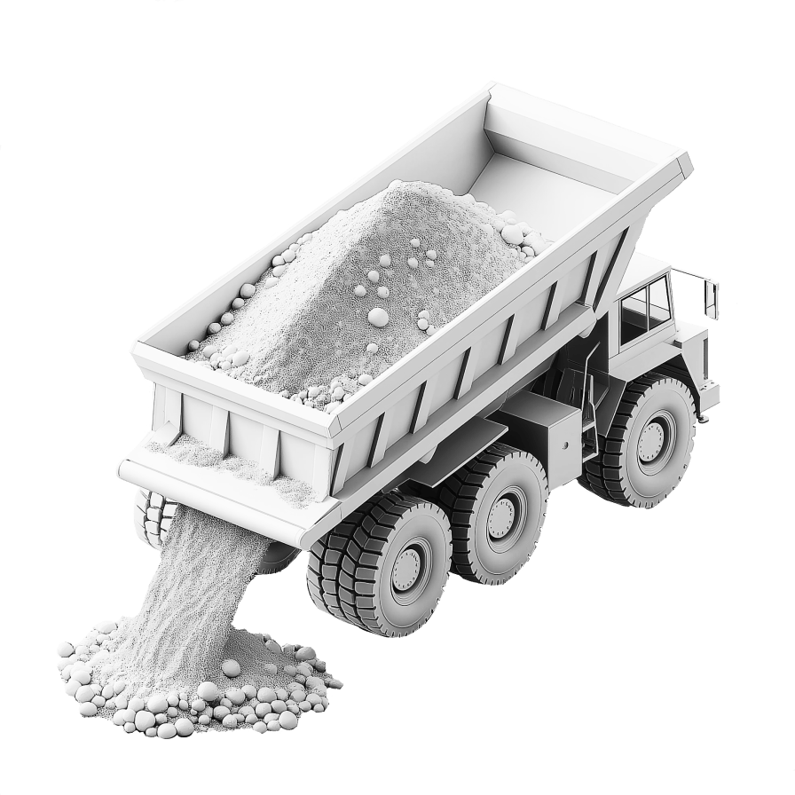

Onze Missie
Blauwe Bagger werkt aan een wereld waarin grondstoffen nooit verloren gaan. Wij zetten bagger om tot bruikbare grondstoffen die bijdragen aan een circulaire toekomst.
Het Probleem
Bagger industrie
Met een totaalvolume van tientallen miljoenen m3 per jaar is bagger de grootste afvalstroom die Nederland kent. Door verontreiniging en wisselende samenstelling zijn er maar weinig oplossingen die de waarde van bagger benutten. Mede daarom wordt bagger veelal gestort op depots, een dure en niet-duurzame oplossing.
Beton industrie
Tegelijkertijd wint de bouwsector jaarlijks honderden miljoenen tonnen primaire grondstoffen om beton te produceren. Dat maakt het een van de meest vervuilende industrieen ter wereld, wereldwijd is 8% van de CO2-uitstoot afkomstig van bouw en beton. De druk om te verduurzamen groeit snel.
0 miljoen m3
0 miljard tons
Onze Oplossing
01 Analyse
Met data uit waterbodemonderzoek bepalen we welke fracties in bagger geschikt zijn voor hoogwaardige hergebruikroutes.
02 Verwerking
Vervolgens wordt de BlueBox op locatie ingezet om bagger te ontwateren, te scheiden en op te schonen tot inzetbare materialen.
03 Hergebruik
Om de keten te sluiten worden de gescheiden materialen nabewerkt en toegepast in bouw- en betonproducten.
BluePrint
tijdlijn
- 2020
- 2025
- 2030
- 2035
- 2040
Oprichting Blauwe Bagger
Het startpunt van Blauwe Bagger: bouwen aan een circulaire route voor baggerstromen.
De oplossing
De circulaire keten begint in een container
Waar anderen afval zien, zien wij grondstof. Onze mobiele verwerkingsunit zuivert, scheidt en verwerkt baggerspecie direct op locatie - zonder dat er eerst vele kilometers gereden hoeft te worden.
Indikken op locatie
Onze mobiele unit maakt het mogelijk om baggerspecie direct op locatie in te dikken. Vooral op afgelegen of moeilijk bereikbare plekken voorkomt dit onnodig transport van grote volumes waterige bagger.



Projecten
Blauwe Bagger
Wij zijn een gedreven team met een doel: alle Nederlandse bagger opschonen en omzetten in waardevolle grondstoffen.


Partners
Samen bouwen aan een circulaire toekomst in de baggerindustrie?
Zet vandaag nog de eerste stap en neem contact op!